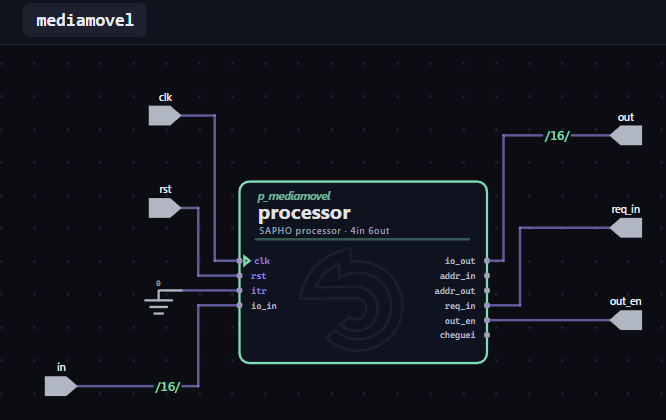
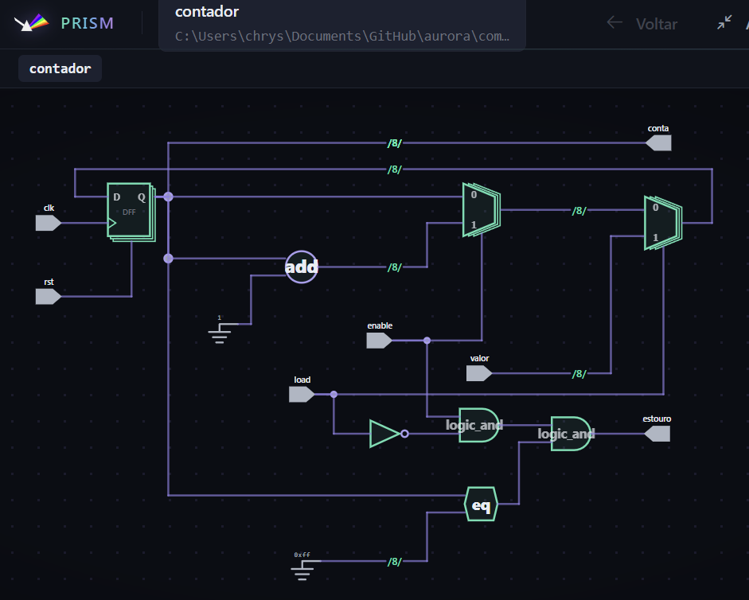
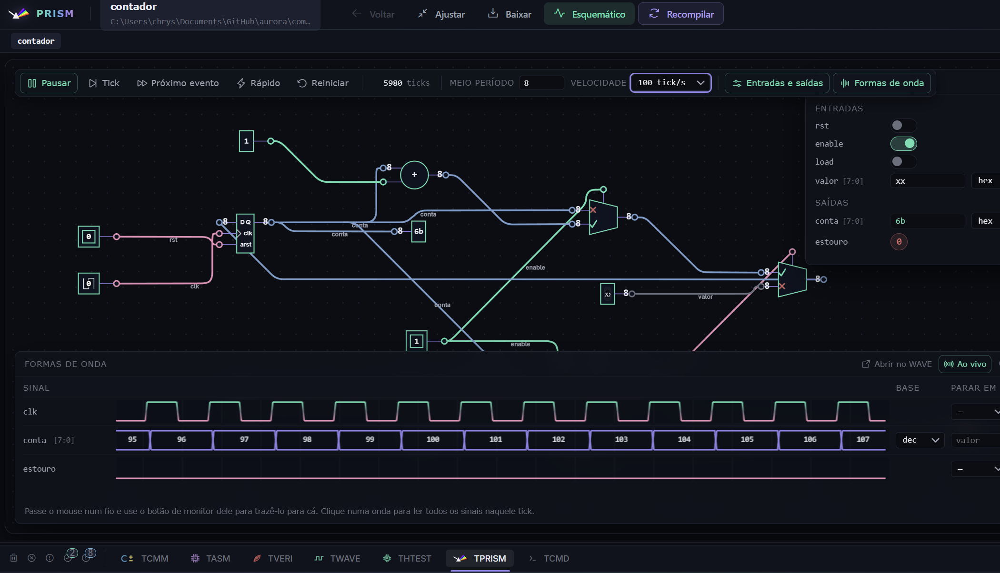
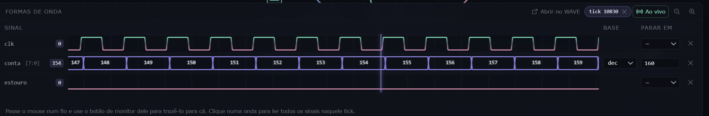
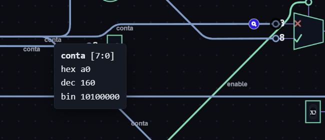
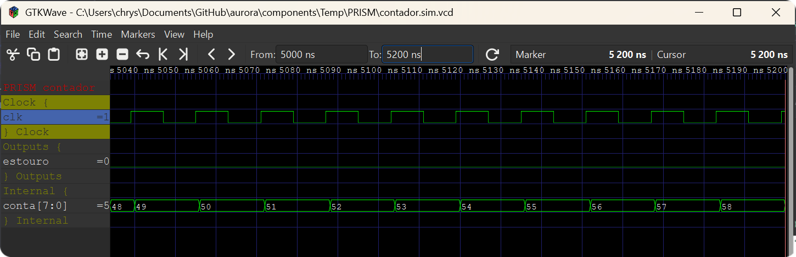
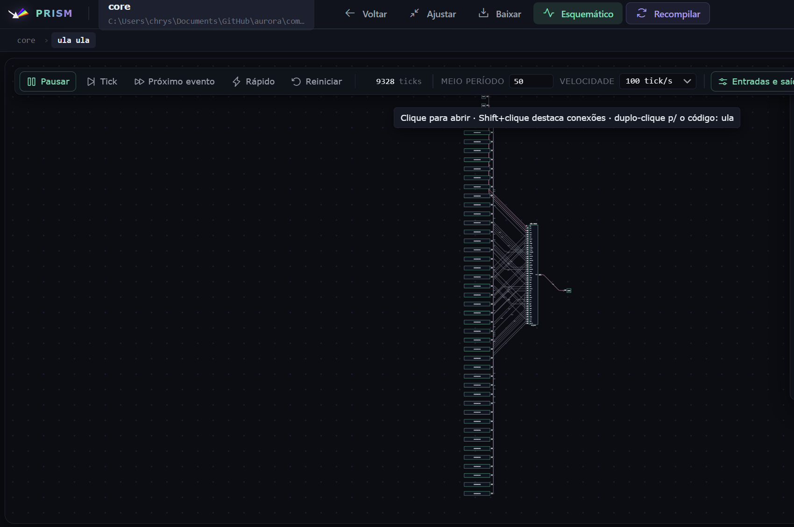

PRISM: o visualizador de RTL¶
O PRISM é o visualizador de RTL da plataforma: ele lê o Verilog do projeto e o desenha como um diagrama de circuito navegável. Responde à pergunta que a forma de onda não responde: em que estrutura o meu código virou hardware? E, com o modo Simular, responde também a seguinte: o que essa estrutura faz quando recebe valores?
O desenho é sempre um retrato do Verilog atual. Quem produz a estrutura é o Yosys, elaborando os mesmos arquivos que iriam para a síntese, então qualquer mudança no código muda o diagrama: acrescente um módulo e ele aparece, troque um operador e o bloco correspondente entra ou some, renomeie um sinal e o rótulo acompanha. Nada ali é decorativo ou desenhado à mão.
Abrir¶
O botão Abrir PRISM exige um Top Level definido. Ele valida o projeto como o botão Verilog faria, sintetiza a estrutura com o Yosys e abre o diagrama. O andamento dessa síntese, com seus avisos, sai no terminal TPRISM.
Por padrão o PRISM abre em janela própria. Quem prefere o diagrama ao lado do código troca em Configurações, aba Geral, a opção Onde o PRISM abre: ele passa a abrir numa aba do editor, como um arquivo.
{kind=link}

Figura 20 O nível do topo. Processadores SAPHO aparecem com símbolo próprio; os demais módulos, como caixas com suas portas.¶
{kind=link}

Figura 21 O mesmo diagrama numa aba do editor, para trabalhar com o código e o circuito lado a lado.¶
{kind=link}
O uso didático¶
O PRISM fecha o ciclo pedagógico da plataforma: cada construção do C± tem um custo em blocos, e aqui os blocos aparecem. O experimento do tutorial (trocar um deslocamento por uma divisão e ver o divisor surgir no diagrama) vale para qualquer recurso: chame sqrt() e observe o que muda, acrescente uma variável float e compare.
Dica
Em que nível olhar. O divisor, o multiplicador e os demais blocos de operação moram dentro da ULA, e não no topo. Depois do Recompile, clique no processador para descer um nível, e então em ula: é ali que o bloco novo aparece, ao lado dos que já existiam. No nível do topo você só veria o mesmo retângulo de antes, porque as portas externas do processador não mudam quando a aritmética interna muda.
Simular¶
O botão Simular troca o desenho pelo circuito vivo. Vale ser preciso sobre o que ele liga: o módulo que está na tela naquele momento, e não o Top Level do projeto. Desça até um contador e clique em Simular, e é o contador que acorda, com as portas dele viradas para você. O mesmo botão, agora Esquemático, devolve o desenho.
A montagem roda o Yosys de novo sobre o código atual e entrega a estrutura a um simulador lógico que vive dentro da própria AURORA; um véu cobre a tela enquanto isso acontece. Não é o Icarus nem o Verilator: é uma simulação de lógica, sem noção de nanossegundos, feita para se ver e se tocar. A simulação séria continua sendo a dos capítulos anteriores; esta é uma lupa.
{kind=link}

Figura 23 O contador do tutorial Verilog em simulação: a barra de tempo sobre o circuito, as entradas como interruptores e o monitor de formas de onda.¶
O tempo¶
Uma barra sobre o circuito comanda o tempo: Rodar e Pausar (também com Espaço), Tick avança um passo (a seta para a direita), Próximo evento salta até a próxima mudança de sinal (Shift mais a seta), Rápido corre sem espera entre os ticks e Reiniciar volta ao tick zero com os registradores no valor inicial, sem recompilar e sem mexer nas chaves das entradas. Ao lado ficam o contador de ticks, o meio período do relógio, em ticks, e a velocidade, em ticks por segundo.
Uma entrada de um bit chamada clk ou clock no módulo simulado vira um relógio de verdade, que bate sozinho; os registradores nascem em zero, como depois de ligar a placa. Módulo sem relógio não tem o que bater: avance com Tick.
Entradas e saídas¶
O painel Entradas e saídas lista as portas do módulo com a faixa de bits de cada barramento: as entradas de um bit são interruptores, as de vários bits são campos em que se digita o valor na base escolhida, e as saídas mostram o que o circuito responde.
Formas de onda¶
O painel Formas de onda é o monitor: o relógio e as saídas entram nele de saída, e qualquer outro fio entra pelo botão de monitor que aparece ao passar o mouse sobre ele. Cada linha tem a base em que o valor é lido e um parar em, que interrompe a simulação quando o sinal chega ao valor dado, com um aviso dizendo qual sinal parou, em que tick e com que valor.
Um clique numa onda põe um cursor naquele tick, e cada linha passa a mostrar o valor que tinha ali; Esc tira o cursor. Ao vivo acompanha o presente, e desliga sozinho quando você arrasta a onda para olhar o passado; a lupa aproxima e afasta no tempo. Passar o mouse sobre um fio do diagrama mostra o nome e o valor dele, em hexadecimal, decimal e binário.
{kind=link}

Figura 24 Um parar em disparou: o aviso diz o sinal, o tick e o valor, e o cursor mostra o que cada linha valia ali.¶
{kind=link}

Da lupa para o osciloscópio¶
Abrir no WAVE grava os sinais do monitor num .vcd e o abre no seu visualizador de ondas, GTKWave ou Surfer conforme a preferência, já com o layout montado: relógio, entradas, saídas e internos agrupados, cada sinal na base que estava no monitor. É o caminho para medir com o cursor e o zoom de sempre aquilo que você acabou de ver acontecer.
{kind=link}

Submódulos¶
A lupa na caixa de um submódulo abre o interior dele no lugar, com a trilha no topo mostrando o caminho; Voltar ou Esc sobe um nível, e a simulação continua correndo em todos os níveis.
{kind=link}

A memória das escolhas¶
O que se escolheu numa simulação fica guardado por módulo e volta sozinho na próxima vez, e também depois de Reiniciar: os sinais do monitor, com base e parar em, a velocidade, o meio período e os painéis abertos.
Ver também
A Aurora Intelligence opera esta simulação por ferramentas próprias, e é a única simulação cujos valores ela consegue ler: Aurora Intelligence.
Os limites do modo¶
A simulação é lógica, sem tempo físico: não existem nanossegundos, atrasos nem
timescale. Quem mede tempo é a forma de onda.Acima de alguns milhares de células o PRISM recusa o modo e sugere abrir um submódulo menor no esquemático e simular aquele. O diagrama estático não tem limite prático.
Um processador SAPHO inteiro executando o programa continua sendo trabalho do testbench; a lupa serve aos módulos e aos pedaços.
Limitações¶
O diagrama parte sempre do Top Level do projeto. Sem ele, o PRISM não abre (a simulação, depois de aberto, é do módulo na tela).
Módulos sem desenho dedicado aparecem como caixas genéricas, o que é cosmético, não funcional.
O PRISM mostra estrutura e comportamento lógico; o comportamento no tempo, com atrasos e clock de verdade, é assunto da forma de onda.